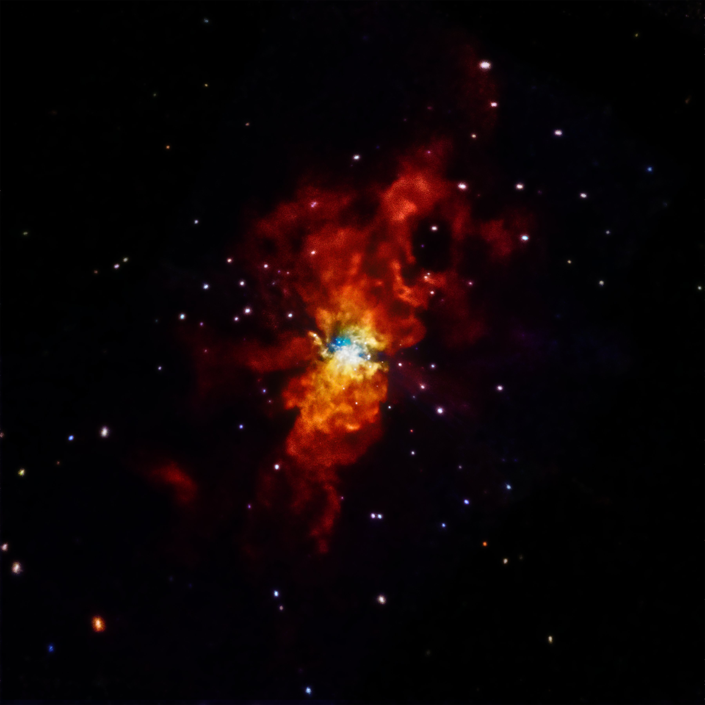

There are no dangerous thoughts; thinking itself is dangerous.
About Me
Hi! I'm an engineering student at the UW. I like to juggle, play the violin, and read poetry.
Classes I'm currently taking
- CSE 154: Web Programming (my favorite of course!)
- COM 220: Public Speaking
Five of My Favorite Things
- Favorite animal: Mantis Shrimp
- Favorite food: Lasagna
- Favorite TV show: Garfield
- Favorite hobby: Napping
- Favorite Drink: Coffee
A picture that represents when I'm happy
Source Adventure Cycling Association
A picture that represents when I'm sad
Source: National Aeronatics and Space Administration (NASA)